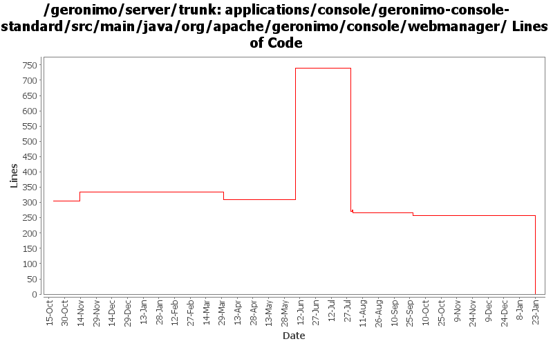

[root]/applications/console/geronimo-console-standard/src/main/java/org/apache/geronimo/console/webmanager

| Author | Changes | Lines of Code | Lines per Change |
|---|---|---|---|
| Totals | 24 (100.0%) | 820 (100.0%) | 34.1 |
| vamsic007 | 5 (20.8%) | 476 (58.0%) | 95.2 |
| pmcmahan | 4 (16.7%) | 326 (39.8%) | 81.5 |
| jbohn | 1 (4.2%) | 12 (1.5%) | 12.0 |
| kevan | 7 (29.2%) | 6 (0.7%) | 0.8 |
| jdillon | 4 (16.7%) | 0 (0.0%) | 0.0 |
| gnodet | 2 (8.3%) | 0 (0.0%) | 0.0 |
| akulshreshtha | 1 (4.2%) | 0 (0.0%) | 0.0 |
(GERONIMO-3747) Moved applications/* to plugins/*
0 lines of code changed in 4 files:
GERONIMO-2775 Get Jetty Stats portlet working again. Merge of 580137 from branches/2.0
12 lines of code changed in 1 file:
GERONIMO-3350 final touches on administration for web connectors
50 lines of code changed in 2 files:
GERONIMO-3350 more portlet updates for the new WebManager apis. Add getKeystorePass and getTruststorePass
to http11protocol interface to support editing HTTPS connectors from the portlet without losing the passwd.
More tweaking to the ConnectorAttributes for jetty, this still needs some work.
31 lines of code changed in 1 file:
GERONIMO-3350 updates to web connector portlet for recent api WebManager api changes. This work
is not complete yet but should allow others to work on the tomcat and jetty connectors with some
UI support. Creating and editing secure connectors in particular is still very fragile.
The basic UI with some input validation seems to work OK. Had to comment out some of the
connector attributes for the jetty connectors because the kernel thinks that they are not persistent
attributes when it tries to create a new connector, even though the gbean info looks to me like they
should be, needs more investigation.
245 lines of code changed in 1 file:
GERONIMO-2481 WebServers portlet: Create/Edit Tomcat Connectors should support editing of all supported connector attributes
432 lines of code changed in 1 file:
Save the attribute only if the value has changed.
10 lines of code changed in 1 file:
GERONIMO-2898 Drop MinThread attribute of jetty connector from ConnectorPortlet
Update JettySecureConnector interface
0 lines of code changed in 1 file:
GERONIMO-2641 Add license headers to files. Thanks Jarek!
0 lines of code changed in 2 files:
GERONIMO-2537 Update more src file headers to be compliant with new apache policy. Also made some updates for consistency
6 lines of code changed in 5 files:
GERONIMO-2565 User confirmation on attempting to stop a web connector through WebServer portlet
1 lines of code changed in 1 file:
source formatting 2 lines
2 lines of code changed in 1 file:
GERONIMO-2278 Problems in editing Jetty SSL Connector and the edit page in Geronimo Console
31 lines of code changed in 1 file:
GERONIMO-2504: Allow all read-only operations on KeystoreInstance to be available to services
0 lines of code changed in 2 files: